How to Train a Critic Stably and Efficiently / 如何稳定且高效地训练 Critic
这篇论文由新加坡国立大学 Penghui Qi、Wee Sun Lee 与腾讯混元 Xiangxin Zhou 合作完成，研究对象是大模型推理后训练中的单轨迹 actor-critic。论文于 2026 年 8 月 24 日公开，唯一论文入口为 arXiv:2608.23566，作者代码仓库 golden_critic 已核验可访问。作者没有另造一种奖励，而是把常见实现中的若干失配逐项拆开，形成 Best-Practice Critic Optimization（BPCO）：用 DPPO 更新策略、把价值预测限制在奖励范围内、用 Monte Carlo 结果训练 critic、保留未归一化的策略优势、按回答长度调整 GAE，并可把答案或评分 rubric 仅提供给训练期 critic。
组相对强化学习通过每个提示采样多个回答来规避 critic，而 critic 本可以只用一条轨迹就估计 token 级优势；真正的障碍是常规 actor-critic 配方会把价值误差、尺度重标定和长度偏差传给策略，从而使训练崩溃或过拟合。
1. 背景和问题
大模型的 outcome-reward 强化学习只在完整回答结束后得到一个标量奖励，前面的每个 token 都没有直接监督。训练算法必须把终局结果分配回序列中的决策。GRPO 一类组相对方法采用一个直观办法：对同一提示生成多个回答，用组内奖励均值与方差构造相对优势，再把同一个回答级优势赋给该回答中的所有 token。它不训练 critic，工程路径相对简单，但每个提示需要多次 rollout，而且回答内部不同位置得到的是同质信用信号。论文在更大规模实验中使用的组基线具体是 Dr. GRPO：它去掉组内奖励标准差归一化，并以 16 个回答构成一组。这里必须守住口径边界：BPCO 是单回答 actor-critic 配方，Dr. GRPO 是多回答组相对基线；本文没有把 RLOO 作为被评估方法。
critic 的替代路线是估计每个前缀状态的期望终局回报，再通过 TD residual 与 GAE 形成 token 级优势。理论上，一条回答就能同时产生多个前缀的价值监督和逐 token 信用分配；推理部署时 critic 被丢弃，因此不会增加线上生成时延。问题在于，大模型长序列把传统 PPO 中并不起眼的误差放大了：PPO 对所有 token 使用相同概率比率阈值，低概率 token 的微小绝对变化会被过早裁剪；当 GAE 的参数小于 1 时，早期 token 会大量依赖 critic 的 bootstrap；回答越长，终局奖励传到前部的权重越小。critic 一旦有系统偏差，策略更新便可能沿着错误方向反复累积。
论文又指出两个常被忽略的实现失配。第一，二元或有界奖励的真实价值必然落在奖励区间中，但普通线性 value head 可以输出远超区间的数；这样的异常值会直接进入 TD residual。第二，batch-wise advantage normalization 无论残余优势是否已经接近零，都把一个 batch 重新缩放到单位尺度。策略接近训练集最优时，本来应该自然减弱的更新会被重新放大，甚至因减去 batch 均值而改变一部分样本的优势符号。BPCO 的论点并非“critic 天生更强”，而是只有当输出范围、监督目标、输入信息和传给 actor 的优势尺度一致时，critic 才可能成为可靠的单轨迹估计器。
为把优化失败与任务难度分开，作者先设计了一个 sanity test：用 DeepSeek-R1-Distill-Qwen-1.5B 微调 1,460 道初始模型已经能够解出的数学题。每轮有 1,024 条轨迹，minibatch 为 256，只做一个优化 epoch，共训练 1,500 轮；训练集理论上应接近满奖励，而 AIME 2025 Avg@32 用来观察泛化。若连这个小而可解的数据集都拟合不稳，就更可能是算法配方的问题，而不是模型容量或奖励稀疏性。作者从 verl 的一个 2026 年 6 月 16 日版本出发，每次只修改一个组件，因此后续曲线可以形成较清楚的因果排查链。
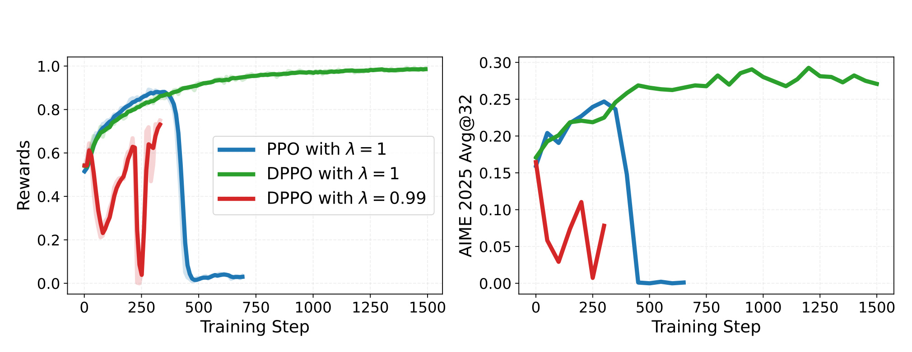
Figure 1 是整篇论文的问题证据。横轴是训练 step，左图看训练奖励，右图看 AIME 2025 Avg@32。蓝线表示 PPO 且 $\lambda=1$：奖励先升高，随后在约数百步后突然跌到接近零，验证曲线同步崩溃；绿线把 actor 目标换成 DPPO，在同样 $\lambda=1$ 下能够持续接近满训练奖励，验证指标也保持在较高平台。红线进一步把 GAE 参数降到 $0.99$，即使使用 DPPO 仍出现剧烈振荡并提前终止，说明 DPPO 修复了概率裁剪的不对称，却不能独自消除 bootstrap critic error。这个对照把后续问题分成两层：actor 的 trust region 先要合理，critic 的目标和尺度随后也必须被约束；作者因此把 $\lambda=0.99$ 当作压力测试，而不是把这条失败曲线误写成 BPCO 的最终设置。
还有一个容易被“单轨迹更省采样”掩盖的成本问题：critic 并不是免费模块。它需要前向、反向、激活与参数内存，论文只在“每个提示的 rollout 数量”上把单轨迹方法与组方法对照，并没有给出端到端 token、FLOPs、显存或 wall-clock 的等成本表。因此，本文支持的结论是“在报告设置中，一条回答足以形成有效信用信号”，而不是“BPCO 在所有硬件和吞吐口径上必然比 GRPO 更便宜”。这个限制也决定了阅读实验时应同时看样本效率和训练系统开销，而不能只看最终 AIME 曲线。另一个评价边界是，AIME Avg@32 衡量从同一问题多次采样的平均正确率，它不同于单次 greedy accuracy；训练用一条 rollout 与评测用 32 次采样也不是同一个“单样本”口径，不能混为一谈。
2. 方法
2.1 从 PPO 的比率裁剪到 DPPO 的概率变化约束
给定提示 $x$、回答 $y=(y_1,\ldots,y_T)$ 和前缀状态 $s_t=(x,y_{1:t-1})$，行为策略 $\mu$ 产生训练轨迹，新策略 $\pi_\theta$ 更新参数。两者都只对实际采样 token 建立 surrogate objective，但裁剪边界的概率几何不同。PPO 与 DPPO 的差别可并列写成：
符号解释：$\rho_t$ 是采样 token 在新旧策略下的概率比，$\hat A_t$ 是该 token 的优势，$\epsilon$ 是允许的绝对概率移动尺度。PPO 对所有 token 固定比率窗口，意味着原概率越小，允许的绝对变化越小；DPPO 把窗口除以行为概率，等价于约束 $|\pi_\theta(y_t\mid s_t)-\mu(y_t\mid s_t)|\le\epsilon$。BPCO 的第一步不是放松 trust region，而是把 trust region 从“共同相对比率”改成“共同绝对概率变化”。它只影响训练时 actor 更新，部署时没有额外模块；Figure 1 说明这一步能消除 PPO 在 $\lambda=1$ 时的崩溃，但 $\lambda\lt1$ 的失败还要继续追查 critic。
2.2 把 critic 的输出、目标与策略优势尺度对齐
符号解释：$r_t$ 在回答结束前为 0，终点为 $R(x,y)$；$\gamma$ 是折扣因子，本文 outcome-reward 设置采用 $\gamma=1$；$\lambda$ 决定 bootstrap 程度；$\phi_{\mathrm{old}}$ 是构造目标时冻结的 critic。$\lambda=1$ 时优势和价值目标可望远镜求和到终局结果；$\lambda\lt1$ 时，$\hat V_t$ 又含有旧 critic 的预测，因而会把旧误差当成监督的一部分。BPCO 允许策略优势使用较低方差的 $\lambda_\pi\lt1$，但把 critic 目标单独设置为 $\lambda_V=1$，不让两种用途共用同一 bootstrap 强度。
普通线性 head 的输出 $z_\phi(s_t)$ 没有边界，这不仅会制造不可能的价值，还会把极端残差送入 GAE。若奖励已知落在从 $R_{\min}$ 到 $R_{\max}$ 的闭区间，BPCO 用缩放 arctangent 做价值参数化：
符号解释：$R_{\min}$ 与 $R_{\max}$ 是奖励上下界，$z_\phi$ 是线性 head 的原始实数输出，$\arctan$ 把所有有限输出映射到开区间。sanity test 的奖励为二元值，因此边界从 0 到 1。这个变换编码了一个强而合理的归纳偏置：价值是有界随机变量期望，不应跑到奖励支持集之外。边界是渐近逼近而非硬 clip，梯度不会在越界后直接归零，但 head 进入 arctangent 饱和区时仍可能产生梯度变小，这是复现时要监控的数值边界。
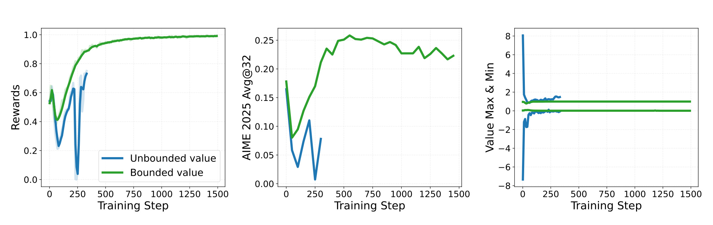
Figure 2 的三个面板把公式的作用直接可视化。左图中，无界 value head 的训练奖励多次急跌，而有界版本平稳上升并接近 1；中图的 AIME 2025 Avg@32 也显示无界版本早期振荡后终止，有界版本升至稳定平台。最关键的是右图：蓝色无界预测在早期冲到大约正负 8，而真实奖励只可能是 0 或 1；绿色有界预测始终贴在合法范围内。这里不能把性能改善只归因于“换了激活函数”，因为它改变的是 TD residual 能接收到的误差上界。也应注意，论文验证的是已知有界奖励；若线上奖励由多个未标定项叠加，必须先明确范围或做稳定标定，不能机械套用从 0 到 1 的边界。
作者随后用 explained variance 检查 critic 拟合，但同时提醒这个指标只有在目标可信时才有意义；若目标本身混入旧 critic，低训练误差可能只是复制自己的历史判断：
符号解释：分子是 critic 相对目标的残差方差，分母是目标自身方差；值接近 1 只表示 critic 能解释“当前所选目标”的变化。标准 $\lambda\lt1$ 目标含旧 critic，模型可能轻易拟合这个自引用目标，EV 很高却没有更好地预测真实结果。BPCO 的 Monte Carlo 目标在 $\gamma=1$、仅终局奖励时等于观测到的 $R(x,y)$，对从行为策略采样的 continuation 而言，是前缀价值的无偏样本；代价是方差较高。论文因此把“给 actor 的低方差信号”与“给 critic 的无偏监督”解耦。
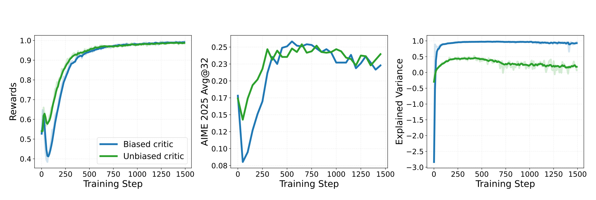
Figure 3 左、中图显示，把 critic 从 bootstrap target 改成最终 outcome 后，训练奖励与 AIME 曲线都更稳定。右图更值得细看：使用有偏目标时，蓝色 EV 很快接近 1，但前两张图并没有同步表现出可靠学习；使用 outcome target 的绿色 EV 较低却对应更稳定的策略。这是一个典型的监控陷阱——指标越“漂亮”并不代表估计对象越正确。工程上应同时报告 critic 对观测回报的 EV、策略奖励、held-out 能力与优势分布，而不能只监控训练 loss 或对自举目标的 EV。曲线仍只证明该设置下的关联，论文没有给出跨种子置信区间，因此不能把某一时刻的 EV 差值解释成普适阈值。
最后，BPCO 删除 batch-wise advantage normalization。这个步骤直接作用于传给 actor 的梯度尺度，而不改变 critic 的 Monte Carlo 监督，也不改变 DPPO 的概率边界：
符号解释：$\bar A$ 与 $\sigma_A$ 分别是当前 batch 优势的均值和标准差。接近最优时，原始优势及其方差本应一起缩小，使 actor 更新自然退火；除以很小的 $\sigma_A$ 会把剩余估计噪声重新放大，减去 $\bar A$ 还可能令原本为正但低于均值的样本变为负优势。BPCO 直接使用 raw GAE advantage，让信号幅度保留 critic 对“还剩多少可改进空间”的判断。它去掉的是 batch 级重标定，不是去掉基线，也不是把 GRPO 的组内归一化移植到 critic 路线。
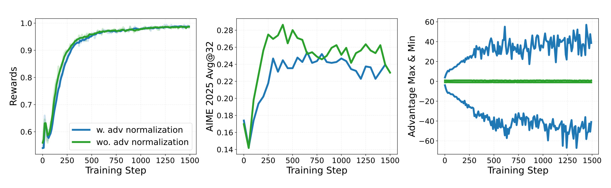
Figure 4 左图表明两种设置都能把训练奖励推近 1，差别不在最终拟合能力；中图中，取消归一化的绿色 AIME 曲线达到更高峰值，并在后段保持得更好，而归一化蓝线更早回落。右图给出机制证据：有归一化时优势最大值与最小值随训练扩大到约正负几十，取消后则收敛在靠近零的窄带。作者把它解释为接近最优时噪声被强制放大，与验证过拟合相吻合。这里的结论应限定为“batch-wise 标准化在该 recipe 中有害”；它不等价于所有尺度控制都不需要，优化器学习率、reward scaling 和梯度裁剪仍可能决定 raw advantage 的可用范围。尤其在跨任务 batch 或奖励稀疏率变化时，raw advantage 的绝对大小仍应被日志持续监控。
2.3 只给 critic 的特权评分信息
critic 只参与训练，因此可以看到 policy 部署时不需要、但由提示固定的评分信息。这个设计类似 centralized training with decentralized execution：训练辅助器拥有更充分状态，执行策略仍受原始观察约束。令 $q(x)$ 表示参考答案、官方解法或逐提示 rubric，作者定义：
符号解释：$s_t$ 仍是提示与已生成前缀，$q(x)$ 是与提示绑定的 reward-defining information，$\mu$ 是产生 continuation 的行为策略。由于 $q(x)$ 由 $x$ 决定，显式输入它并不改变理想条件期望，只是让有限容量 critic 更容易判断“当前前缀最终能否满足评分条件”。policy 始终只看到原提示与自己的前缀，所以这不是把标准答案泄露给生成模型；训练结束后 privileged critic 整体被移除。风险在于 critic 变准会同时加快学习与训练集记忆，特权信息并不保证 held-out 泛化。
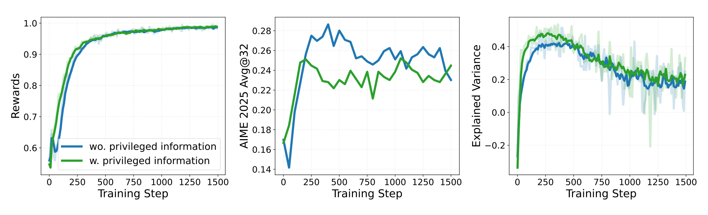
Figure 5 左图中，给 critic 参考答案的绿色曲线更快接近满训练奖励；右图 EV 也明显更高，说明评分上下文确实降低了价值逼近难度。但中图的 AIME 2025 Avg@32 揭示反面：特权版本上升更快，却更早到达峰值并随后下降；不含特权信息的蓝线后期反而更稳。这说明“更好的 critic fit”不是单调更好的 policy regularization。在小数据 sanity test 中，答案帮助模型更快耗尽训练集信号，也把过拟合时间提前。落地时应该把 q(x) 是否可用、覆盖率、是否包含泄漏、验证集早停和 critic-only 数据管线同时纳入设计，而不是把“有答案就拼到 critic 输入”当成无条件增益；还应确认 policy 的输入拼接与 attention mask 中完全没有这段特权文本。
2.4 长度自适应 GAE 与最终 BPCO 配方
固定 $\lambda_\pi\lt1$ 会让终局 residual 对早期 token 的权重按 $\lambda_\pi^{T-t}$ 衰减。回答越长，序列前部越依赖 critic bootstrap。论文采用 VAPO 与 SAO 路线中的 length-adaptive GAE：
符号解释：$L=|y|$ 是回答长度，$\alpha\gt0$ 控制偏差与方差；第二式近似表示最早 token 接收终局 residual 的系数，对不同长度近似不变。论文在 controlled study 中取 $\alpha=0.4$，critic 仍使用 $\lambda_V=1$ 的 Monte Carlo 目标。训练期流程于是按原文顺序闭合：DPPO 约束 actor 概率变化，有界 head 约束 critic 输出，outcome target 约束监督真值，raw advantage 保留更新退火，privileged input 可选地降低逼近难度，LA-GAE 再控制长序列的终局信用；推理时只保留更新后的 policy。
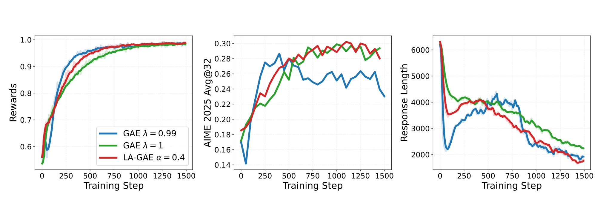
Figure 6 比较固定 $\lambda_\pi=0.99$、固定 $\lambda_\pi=1$ 与 LA-GAE $\alpha=0.4$。左图中，$0.99$ 的蓝线拟合训练集最快，$\lambda=1$ 的绿色最慢，自适应红线居中；中图却显示蓝线在早期峰值后持续退化，绿色更稳，红线兼顾较快提升和较高后期 AIME。右图的回答长度也随策略变化，提醒这里不是在固定序列上单独调一个平滑系数：policy 生成分布与 GAE 权重会互相影响。作者据此选择 $\alpha=0.4$，但没有展示系统性的 $\alpha$ 扫描、不同最大长度或非数学任务的稳定区间，所以它应被视为当前 recipe 的经验点，而不是普适常数。若实际长度分布显著更短，公式还要求检查 $1-1/(\alpha L)$ 是否落入合理范围。
3. 实验结果
3.1 对照设置与可比口径
broader evaluation 比较三条路线。组基线用 Dr. GRPO，group size 为 16，并匹配总 batch size；critic baseline 已经采用 DPPO、解耦 GAE 的无偏 value target 与 length-adaptive GAE，但保留无界 value head 和 batch-wise advantage normalization；BPCO 在这个 critic baseline 上增加价值边界并取消优势归一化。带答案、官方解法或 rubric 的变体分别记为 BPCO+Ans、BPCO+Sol 与 BPCO+Rubrics。所有 critic 方法对每个提示只采样一个回答，所有方法的 actor 更新都使用 DPPO。这一点很重要：后续 BPCO 相对 critic baseline 的差距不能归给 DPPO、Monte Carlo target 或 LA-GAE，因为这些组件已被共同采用。
sanity test 的六张图支持了一条连贯的排错链：DPPO 修复 PPO collapse；value bounding 移除越界预测；Monte Carlo target 阻断自引用监督；raw advantage 避免接近收敛时重新放大噪声；privileged answer 改善 critic fit 但可能提早过拟合；LA-GAE 在训练速度与长回答泛化间折中。它的优点是单变量递增，缺点是主要来自单个 1.5B 模型与一个小数学数据集，而且正文没有报告独立随机种子的均值、方差或显著性检验。因而这些曲线更像机制诊断，不应替代更大规模结果。
3.2 DeepScaleR：数据规模扩大后的主结果与消融
作者把 DeepSeek-R1-Distill-Qwen-1.5B 扩展到 DeepScaleR 的 40.3K 道数学题，其中约 7.3K 道有官方 solution，最大回答长度为 24k。这个设置同时检验三个问题：小数据上观察到的稳定性修复是否仍有效；只有一条 rollout 的 critic 能否与 16 条组采样竞争；privileged information 在覆盖不完整时是否还有价值。正文以训练曲线而非终值表报告结果，因此以下解读以相对趋势为主，不把肉眼读图的小数当成精确统计量。
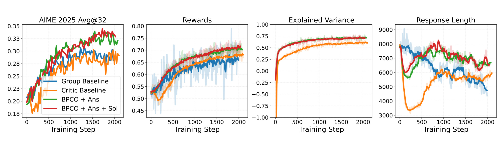
Figure 7 从左到右分别是 AIME 2025 Avg@32、训练奖励、explained variance 与回答长度。绿色 BPCO+Ans 与红色 BPCO+Ans+Sol 在验证和训练奖励上总体处于上方，蓝色 group baseline 与橙色 critic baseline 较低；critic baseline 的 EV 明显低于两个 BPCO 变体，支持价值边界和 raw advantage 有助于 critic 学习。回答长度却没有简单的“越短越好”：早期 critic baseline 快速降到较短序列，随后回升，而带 privileged input 的曲线保持更长回答。核心证据是单轨迹 critic 变体在该设置中能达到或超过组基线，而不是某个固定长度带来收益。图中缺少纯 BPCO 的同面主曲线，也没有端到端吞吐与训练成本，因此 privileged input 和基础 recipe 的贡献还要结合后续消融判断。
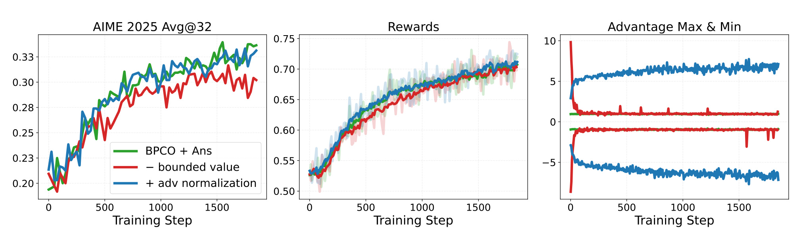
Figure 8 以表现较好的 BPCO+Ans 为起点，红线去掉 bounded value，蓝线重新加入 advantage normalization。去掉价值边界后，训练奖励上升更慢，AIME 曲线后期也低于完整设置，说明 reward-range alignment 在 40.3K 数据上仍有作用；重新加入归一化后，右图优势范围随训练不断扩张，复现了小数据 Figure 4 的尺度风险。中间奖励曲线的差距没有 sanity test 那么剧烈，作者也承认训练尚未完全收敛，所以 raw advantage 在这里带来的直接性能增益较小。消融支持“两个修复跨数据规模仍有一致方向”，但没有给出多种学习率或 reward scale 下的交互实验，不能断言它们对所有优化器都同样必要。
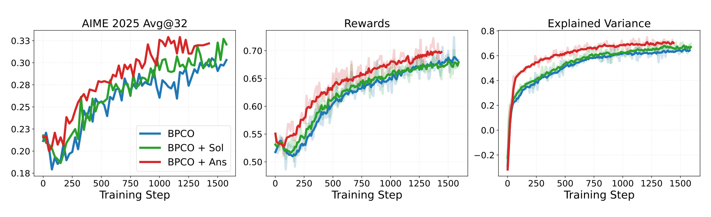
Figure 9 比较纯 BPCO、BPCO+Sol 和 BPCO+Ans。答案变体在 AIME、训练奖励与 EV 上整体更快、更高；只有约 7.3K 题覆盖的官方 solution 仍带来轻微改善，说明稀疏的高质量评分上下文可能帮助 critic 建模。它与 Figure 5 的小数据过拟合形成互补：特权信息的 critic 收益较稳定，但 policy 是否受益取决于数据规模与过拟合程度。还应避免把 “Ans” 和 “Sol” 合并成同一种输入：ground-truth answer 通常短而覆盖全量，official solution 更长、覆盖有限、包含推理过程，两者对长度、显存和泄漏审计的成本不同。论文没有报告把这些输入随机打乱后的负对照，因此因果解释仍主要来自消融趋势。
3.3 30B-A3B MoE：模型规模迁移
更大模型实验使用 Qwen3-30B-A3B-Base 与 Qwen3-30B-A3B，在 DAPO-Math-17k 上训练，比较 group baseline、critic baseline 和 BPCO+Ans。两个模型都是总参数约 30B、激活参数约 3B 的 MoE，但初始能力与后训练状态不同，因此同一 recipe 在两行曲线上的差别也检验了初始化敏感性。
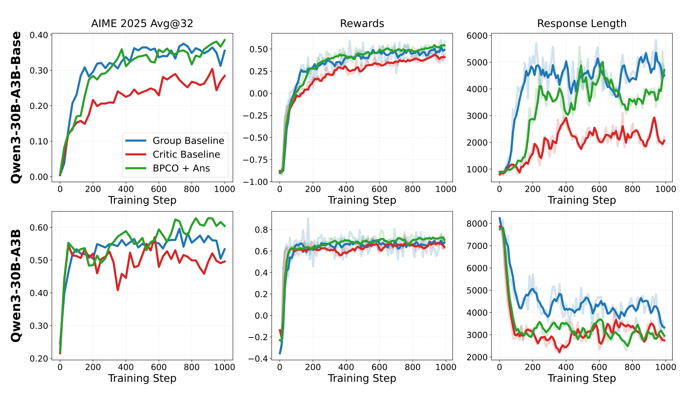
Figure 10 是论文原始的六面板组合图。上排 Qwen3-30B-A3B-Base 中，绿色 BPCO+Ans 与蓝色 group baseline 的 AIME 曲线接近，红色 critic baseline 明显落后；训练奖励亦以绿、蓝较高，红线较低。下排 Qwen3-30B-A3B 中，BPCO+Ans 的 AIME 后期高于 group baseline，critic baseline 在约前 100 步后未能持续改善且波动更大。右列显示三种方法生成长度差异显著，特别是 Base 模型上 critic baseline 的回答更短，这意味着验证提升不能只由训练奖励解释。该图支持 BPCO 相对既有 critic recipe 的跨规模改善，并在一个模型上超过组基线、另一个模型上与其相当；它不支持“BPCO 在所有模型上必胜 GRPO”，也没有分离 MoE 路由、critic 容量和答案输入的各自贡献。
3.4 Rubric 奖励：从可验证数学题扩展到开放评分
最后的任务使用 Qwen3-4B-Base 同时初始化 policy 与 critic，在 OpenRubrics 上训练，由 Qwen3-4B-Instruct-2507 依据每个提示的 golden rubrics 评分。rubric 对 policy 不可见，但可以作为 critic-only privileged information。相较数学 exact-match，这个设置把奖励来源改成 judge 模型，价值函数还要吸收评分器噪声和 rubric 解释差异。
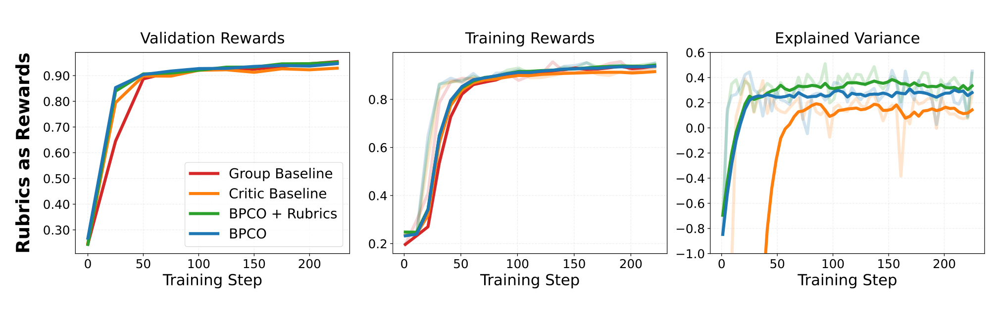
Figure 11 左、中图显示 BPCO 与 BPCO+Rubrics 在前几十步比 group baseline 和旧 critic baseline 更快提升验证与训练奖励；训练后期，group baseline 追到相近验证水平，critic baseline 略低。右图中 BPCO+Rubrics 的 EV 高于不带 rubric 的 BPCO，但两者最终 policy reward 没有清晰差距。作者据此判断任务较容易，额外 rubric 上下文改善了 critic 拟合，却没有转化成 policy 性能。这一结果很重要，因为它否定了“privileged EV 提升必然带来最终收益”的简单叙事；更稳健的结论是 bounded value 与 raw advantage 对 judge reward 仍有效，而特权信息的边际价值取决于任务难度、评分噪声和基础 critic 是否已经足够。
把四组实验合在一起，论文最有说服力的部分是方向一致性：在小数据诊断、40.3K 数据、两种 30B-A3B 模型和 rubric judge reward 中，BPCO 都优于旧 critic baseline；组基线则是有时相当、有时较弱，而非被全面压制。最不足的部分是效率与统计口径：没有显式 token/FLOPs/显存/wall-clock 表，没有多随机种子误差条，也没有在代码生成、对话偏好或非固定有界奖励上验证。因而“single rollout”确实减少每提示采样数，但总训练效率仍需复现实验补齐；“matches or exceeds”应理解为本文报告曲线范围内的经验结论。
4. 总结
4.1 我的判断与迁移价值
BPCO 的价值不在某个全新 loss，而在把 actor-critic 中彼此耦合的几处假设重新对齐：DPPO 约束 token 的绝对概率变化，有界 head 让 critic 输出尊重奖励支持集，Monte Carlo target 让 critic 学观测结果而非自己的旧预测，raw advantage 让更新随残余信号自然减弱，LA-GAE 让长回答前部仍保留稳定终局权重。可选 privileged input 则利用 critic 只存在于训练期这一事实，把答案、solution 或 rubric 变成价值估计上下文。对推荐或搜索系统，这套思路可迁移到有界点击/转化/满意度奖励的序列决策，但前提是离线日志中的行为策略、延迟回报和 reward range 都能可靠定义；对大模型后训练，它提供了少 rollout 的 token 级信用分配路线，尤其适合长 CoT 或每次采样成本很高的任务。
4.2 局限、风险与后续跟进
至少有六个边界需要保留。第一，任务主要是数学推理与 rubric judge reward，尚不能外推到开放对话、安全约束、代码执行或推荐线上长期价值。第二，有界 value head 假设奖励范围已知；多奖励加权、非平稳 judge 或动态业务指标会使边界本身变化。第三，privileged answer/solution/rubric 可能引入数据泄漏、覆盖偏差与额外长上下文成本，而且小数据实验已经显示更早过拟合。第四，critic 增加反向计算、激活和显存，论文没有在与组采样等 token、等 FLOPs 或等 wall-clock 下比较。第五，曲线缺少多种子统计与置信区间，若干“更高”结论可能受训练噪声影响。第六，$\alpha=0.4$、学习率与 batch 配置来自有限调参，换模型、长度分布或奖励稀疏度后可能需要重定标。
后续最值得做三组复现。其一，在同一硬件上记录每个有效 policy update 的 rollout token、critic FLOPs、峰值显存、wall-clock 与最终 reward，把“单回答”落实为端到端效率曲线。其二，做二维消融：扫描 LA-GAE 的 $\alpha$ 与 value-head 边界/温度，并按回答长度分桶看 early-token advantage bias，确认 Figure 6 的折中是否跨长度稳定。其三，针对 privileged input 做覆盖率和泄漏控制实验：答案、完整 solution、rubric、随机错配 rubric 分开输入 critic，同时比较 critic EV、校准误差、policy held-out 能力和过拟合时间。进一步可在推荐序列或带延迟转化的环境中检验 Monte Carlo target 的高方差代价；若 reward horizon 很长，可能还需要在无偏性与方差之间引入新的可验证折中，而不是直接照搬数学题配置。
总的来说，论文用扎实的逐步对照说明 critic instability 很大一部分来自配方失配，而非 critic 这一建模选择本身。BPCO 已给出值得复现的基线，但当前证据更适合支持“可靠的单轨迹替代方案”，不适合升级为对组相对方法的普遍替代结论。